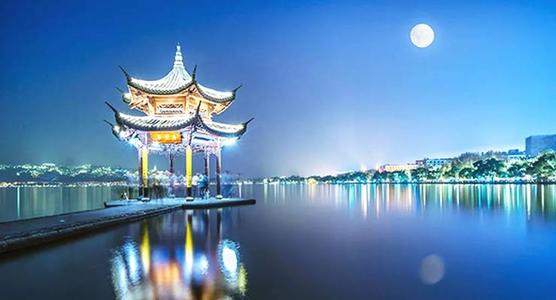

西湖美景
西湖又名西子湖,位于”人间天堂”的杭州，一年四季风景各异,魅力独具。西湖湖中有岛，岛中有湖,价值白堤、苏堤的分割,很有东方美学的风格。西湖由于地质方面的原因,湖水不像其他的湖泊那样清澈透明,而是半透明,水光潋滟,山色空蒙,非常含蓄朦胧。
正如苏轼说的"水光潋滟晴方好,山色空蒙雨亦奇。欲把西湖比西子,淡妆浓抹总相宜。湖心亭位居西湖中央,在亭中举目四望,湖上风光一览无遗。首先映入眼帘的是雷峰塔,旁边一丛丛绿色的茂盛的树木像侍卫一样站立在雷峰塔旁边守护着它 ,雷锋助人为乐的情景又一浮现在眼前....向右看去，是“断桥残雪”, 相传当年许仙和白娘子就是在断桥上分别的。环视西湖一周，就像是被绿色环绕着的小岛,到处都是有郁郁葱葱的树木和丛林,那些被树包围着的景物就像是海市蜃楼一般,若隐若现,犹如梦境一般。